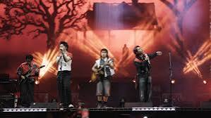

Cup of Joe
Indie Pop / Alternative Rock · Baguio, Filipina

Indie Pop / Alternative Rock · Baguio, Filipina
Indie Pop / Alternative Rock
Cup of Joe adalah grup musik indie pop/alternative rock asal Filipina yang dikenal dengan lirik puitis, aransemen lembut, dan tema introspektif seperti patah hati, kehilangan, dan pertumbuhan personal. Nama mereka terinspirasi dari secangkir kopi — simbol kehangatan dan persahabatan.
Survei 20 responden: "Berapa menit/hari mendengarkan lagu Cup of Joe?"
Total durasi: 854 menit/hari · Rentang: 22 - 60 menit
Perhitungan: Mean = 854/20 = 42.7 · Median (urut) = (42+44)/2 = 43 · Modus = 47 (muncul 2x)
🎶 Rata-rata pendengar Cup of Joe mendengarkan selama 42.7 menit/hari. Median 43 dan modus 47 menunjukkan konsistensi fans. Lagu "Multo", "Misteryoso", dan "Ikaw Parin Ang Pipilin Ko" menjadi favorit berdasarkan durasi mendengarkan.
✅ Nazril Ilham Dillion Pratama · XI TKJ 3 · Absen 04